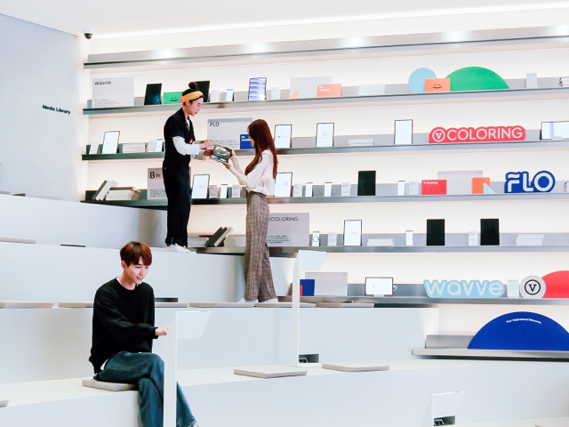

TALK CONCERT
e-스포츠에 대한 모든것
with 프로 게이머
{{ $t('prd.lecture-introduction')}}
이제 스포츠 선수만큼, 아니 그보다 더 유명해지고 있는 e-스포츠 프로게이머!
그들은 어떤 삶을 살고 있을까요?
어떻게 하면 프로게이머가 될 수 있을까요?
e-스포츠의 모든 궁금증을 실제 프로게이머가 풀어드립니다!
{{ $t('prd.lecture-composition')}}
- 프로게이머가 되는 방법 : 제 2의 Faker(T1 소속 대표 프로게이머)를 꿈꾸는 여러분에게
- 프로게이머의 삶(나의 이야기)
- - e-스포츠 선수의 하루일과
- - e-스포츠 선수 삶의 명암
- 인싸이더가 보는 e-스포츠의 미래
- Q&A
{{ $t('prd.recommended-target')}}
- 게임을 하거나, 보는 것을 좋아하는 모든 사람
- 프로게이머의 연봉부터 삶까지 모든 것을 알고 싶은 사람
- 프로게이머를 꿈꾸거나 색 다른 직업이 궁금한 사람
{{ $t('prd.schedule-place')}}

매달 넷째 주 화요일 오후 7시
T Factory 1층, 미디어 라이브러리
{{ $t('prd.lecturer-introduction')}}

SONNY CREW
안상원
2F MS 존 및 게임 프로그램 운영
- LG 프로게임단 활동 (7.8년)
- 스타크래프트 2 프로게이머 우승경력 보유
(국내 4회, 국제 1회) - 게임대회 진행 MC경력 및 게임 큐레이션 경험
- 게임 개인방송(트위치) 운영, 영상제작/편집/진행